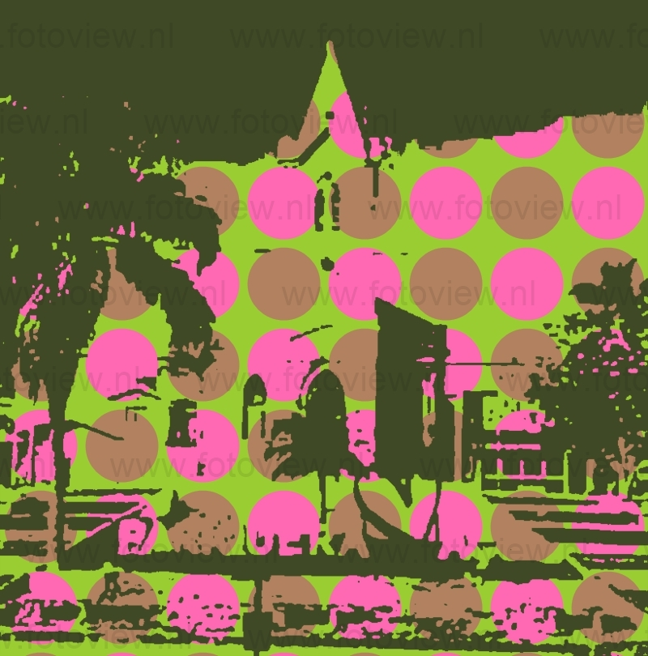
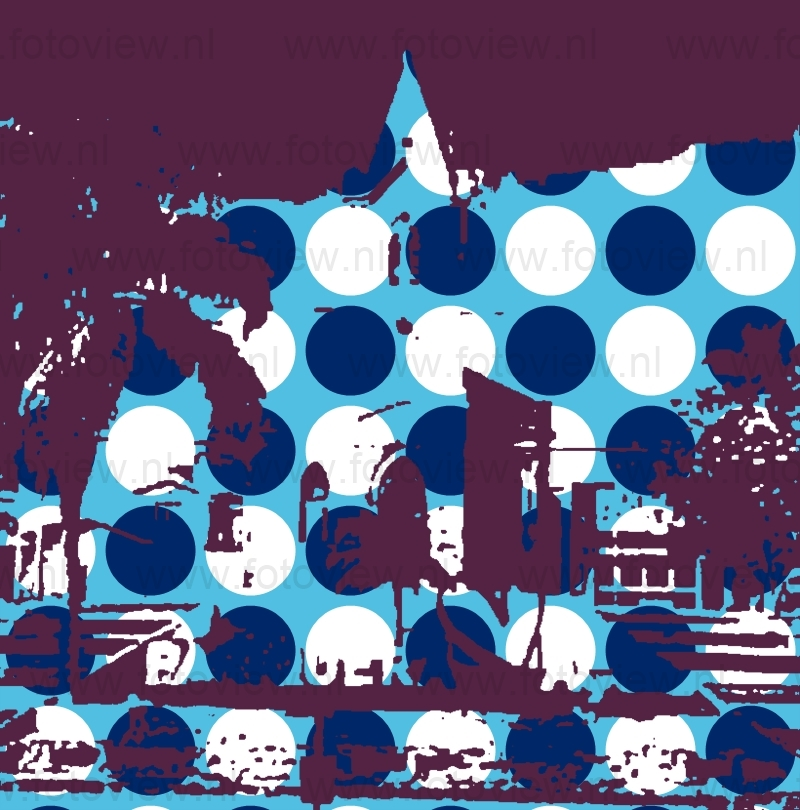
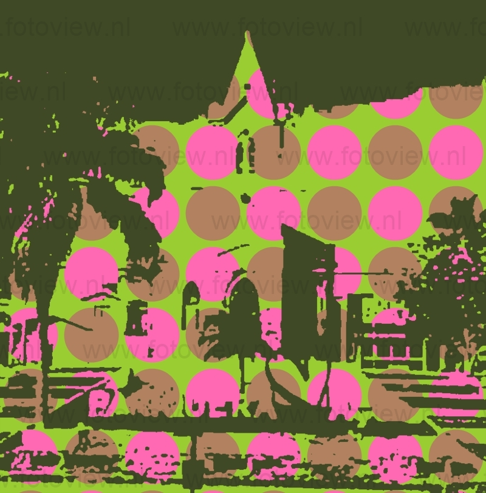
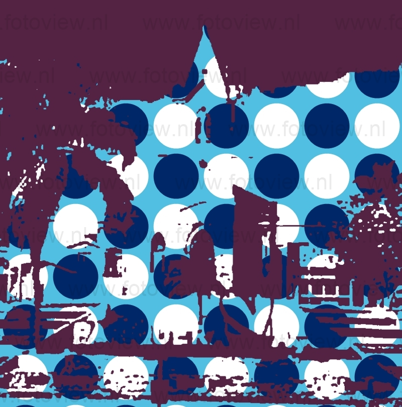

Em ambos os casos, a viagem durava dias e por isso, em uma região de planície, fora construída a primeira pousada, às margens dos Rios Turvo e Pariquera-Açu (ou Pariquera-Assu, de acordo com a grafia da época, que deriva da língua tupi onde “pari” (barragem e pesca), “puera” (extinta) e “ussu” (grande), dão o significado de “grande barragem extinta”. Há ainda outra vertente que diz que o significado de Pariquera-Açu é “cercado de peixes grandes” (um covo). O local agradável contava com construções antigas (choças), cujas coberturas eram feitas com folhas de palmeiras guaricana. Lá se instalaram novas casas em torno da pousada. Nascia assim, a "aldeia Guaricana", que permaneceu sem grandes mudanças por muitos anos, sempre oferecendo pousada tranquila aos viajantes. No ano de 1854, a Presidência da Província de São Paulo nomeou funcionários para a administração, de um projeto de desenvolvimento agrícola na região, criando diversos núcleos coloniais, sendo um deles, o núcleo colonial de Pariquera-Açu (assim nomeado por conta do rio que o banhava). O núcleo colonial de Pariquera-Açu foi criado para receber exclusivamente os imigrantes europeus que chegavam ao Brasil, onde apenas três décadas depois, o projeto passou a ter sucesso, com a chegada de poloneses, italianos, húngaros, suíços, e alemães, que passaram a desenvolver suas lavouras. Em 11 de janeiro de 1901, o Congresso do Estado fez a emancipação de diversos núcleos coloniais, incluindo o núcleo colonial de Pariquera-Açu e, oito anos depois, foram distribuídos os primeiros títulos de propriedade.
 


